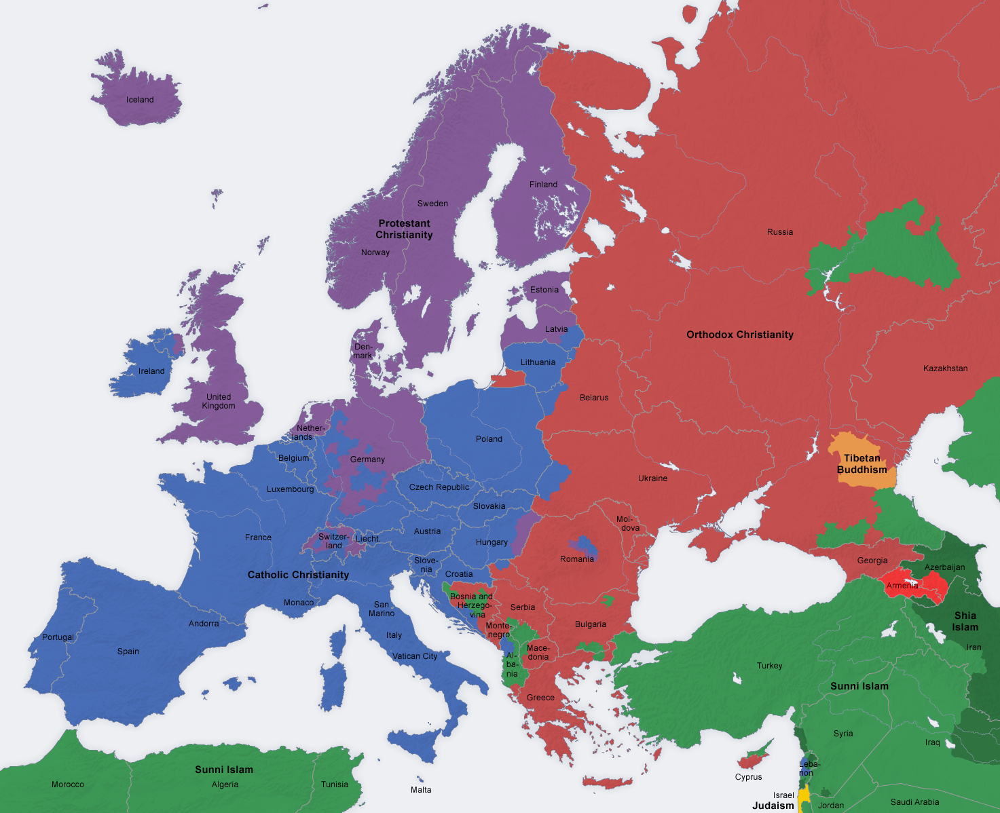
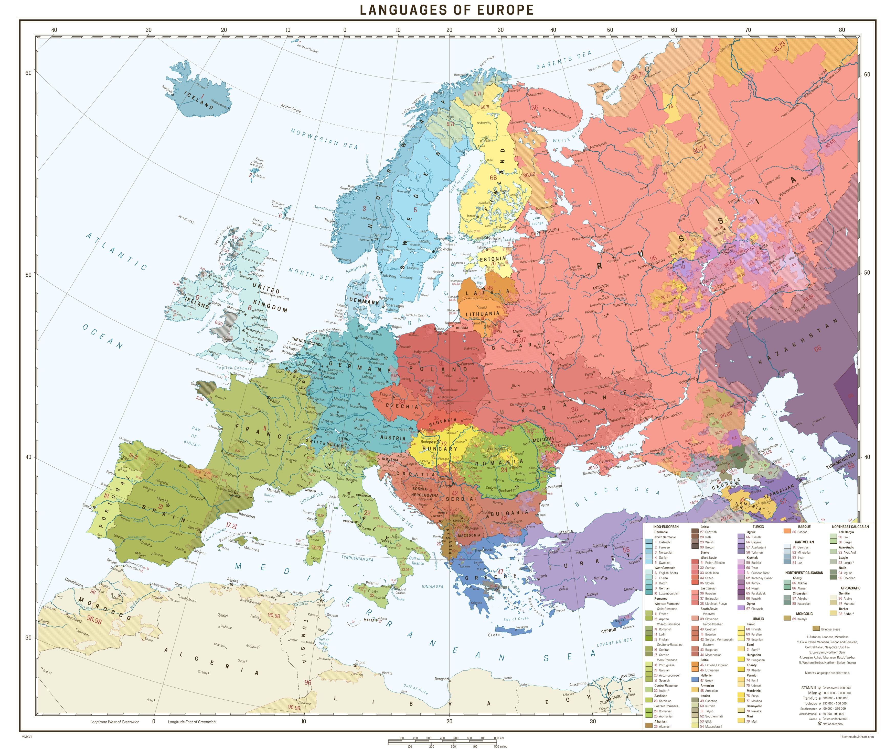
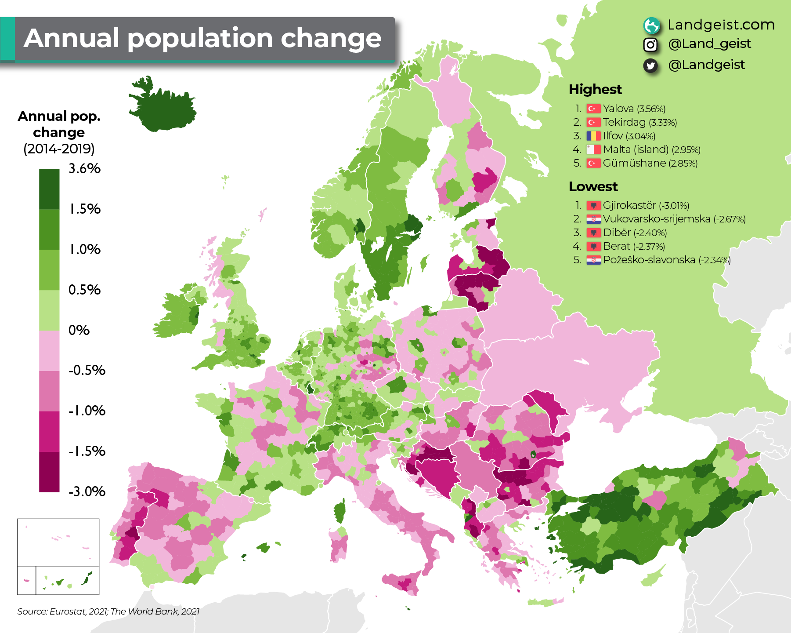

Загальна кількість населення
~750 млн
(Включаючи європейську частину Росії)
Європа — єдиний регіон світу, де спостерігається тенденція до природного скорочення населення, що створює унікальні демографічні виклики.
Демографічний виклик: Старіння та депопуляція
Європа переживає "демографічну зиму" — процес, де смертність перевищує народжуваність. Це призводить до зменшення кількості населення (депопуляції) та збільшення частки літніх людей.
Вікова структура: Два обличчя Європи
Вікові піраміди наочно демонструють демографічні відмінності. "Старіючі нації", як Німеччина, мають вузьку основу (низька народжуваність) і широку верхівку. "Молоді" країни, як Ірландія, мають більш збалансовану структуру.
Німеччина (регресивний тип)
Ірландія (стаціонарний тип)
Інтерактивна модель Демографічного Переходу
Це модель, що описує історичний перехід від високих до низьких показників народжуваності та смертності. Оберіть фазу, щоб побачити, як змінюється динаміка населення.
Механічний рух: Міграція як балансуючий фактор
Міграція відіграє ключову роль у демографічній ситуації Європи, компенсуючи природне скорочення населення та забезпечуючи притік робочої сили. Основні потоки спрямовані з менш розвинених регіонів до економічних центрів Західної Європи.
Країни-донори
Східна Європа
Північна Африка
Близький Схід
Країни-реципієнти
Німеччина
Франція
Велика Британія
Іспанія
Культурні та Демографічні Карти Європи
Карти допомагають візуалізувати складні демографічні та культурні патерни. Натисніть на карту, щоб переглянути її у повному розмірі.

Релігійна карта

Мовна карта
.svg)
Щільність населення

Приріст населення
Рівень урбанізації
~75%
населення проживає в містах
Європа — один із найбільш урбанізованих регіонів світу, де міський спосіб життя є домінуючим, що породжує нові форми розселення.
Центри тяжіння: Світові міста та мегаполіси
Міська система Європи характеризується наявністю потужних агломерацій та світових міст, що є глобальними центрами фінансів, політики та культури. Найбільше їх скупчення утворює мегаполіс "Блакитний банан".
Світові міста
- Лондон
- Париж
- Брюссель
- Цюрих
- Франкфурт-на-Майні
Мегаполіс "Блакитний Банан"
Лондон • Рандстад • Брюссель • Рейн-Рур • Франкфурт • Цюрих • Мілан